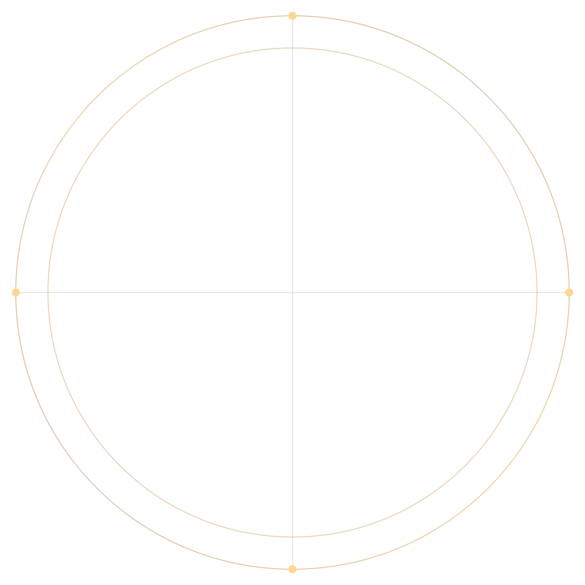
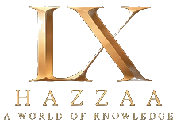
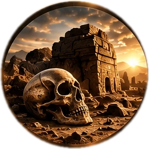
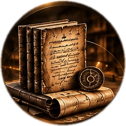

أطلس الرفات القديمةANCIENT REMAINS ATLAS
أطلس الوثائق والمخطوطات والنقوشDOCUMENTS ATLASمنصتان فقط — عناصر مفصولة وقابلة للتعديل



أطلس الرفات القديمةANCIENT REMAINS ATLAS
أطلس الوثائق والمخطوطات والنقوشDOCUMENTS ATLAS